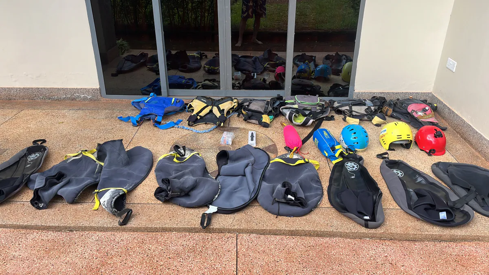
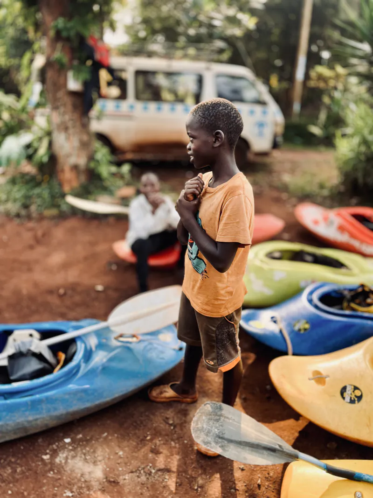
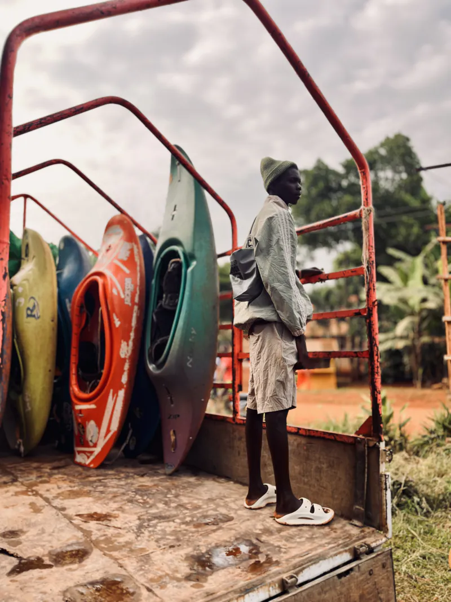
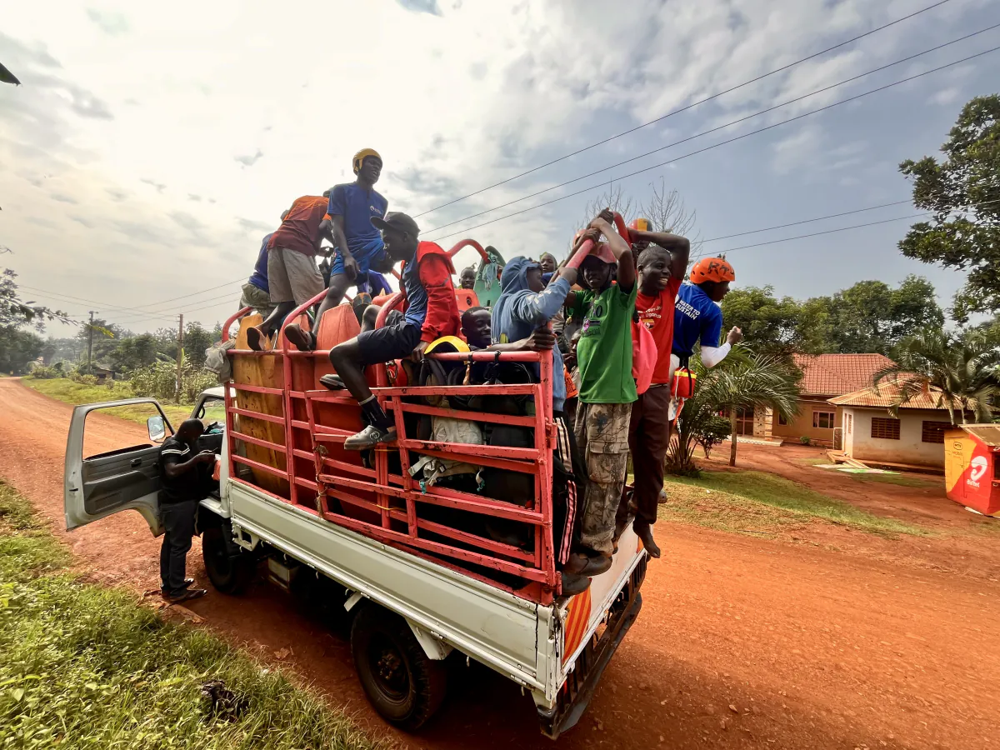
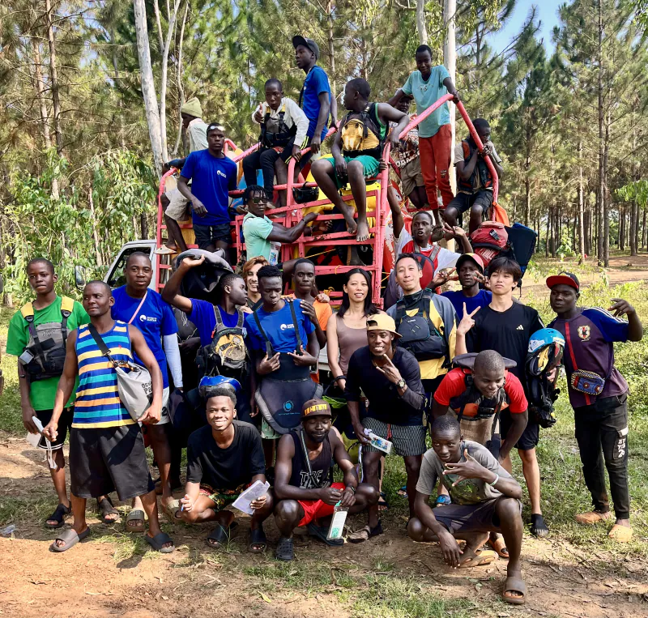

激流上的傳承與守護：記 2025 Bujagali 獨木舟挑戰賽

這條白尼羅河給了我們生命。他孕育了全世界最頂尖的激流獨木舟社群，也養育了數千年來信賴他、敬畏他的烏干達人民。去年七月，我們推動了第一屆 Bujagali Challenge——一場激流獨木舟挑戰賽，它的真正意義，遠不止於「誰划得最快」。這是一場關於生命、傳承與勇氣的社群運動。
為什麼我們必須改變？
我們社群裡有很多 12-16 歲的年輕學徒。對他們來說，划獨木舟不只是運動，它是改變命運、獲得工作機會的唯一出路。他們渴望證明自己，渴望趕上資深嚮導。但這份渴望，有時卻成了致命的陷阱。我們永遠無法忘記那場悲劇。一位年輕的學徒被指派了遠超他能力的危險任務。他害怕拒絕意味著「再也沒有機會上水」，所以硬著頭皮去了。結果，他沒有回來。
這件事重創了我們。我們意識到，如果不改變社群的文化、不為年輕嚮導建立安全的學習網絡，這條河流還會吞噬更多年輕的夢想。這就是「Bujagali Challenge」的初心：給予年輕嚮導正規的培訓、裝備與尊重。讓他們擁有拒絕危險、評估風險的底氣。
跨越國界的救援與支持

辦一場比賽需要資源，而這就是 Su 帶給我們的奇蹟。當 Witin 和我在烏干達本地振臂召喚資深嚮導和學徒時，協調工作的 Su，在台灣到處奔走籌措經費。看著這些從台灣遠道而來、整齊排列的專業頭盔、救生衣、擋浪裙，我們明白，這不只是一批裝備；這是守護下一代的盔甲。有了這些裝備，年輕嚮導們可以毫無後顧之憂地去挑戰水浪，知道他們的安全被重視、他們的生命被尊重。
那些借來破裂救生衣、用破布當頭盔的日子，正在改變。感謝 Su，感謝來自台灣與世界各地的支持。
傳承的重量與希望



比賽當天，看著這些 12、16 歲的孩子——有的才剛學會基本技能，眼中閃爍著對未知的敬畏，凝視著卡車上滿滿的獨木舟；有的已經可以自信地站在車上，準備迎接挑戰。在 Bujagali Challenge 裡，勝負是其次。最美的畫面，是我們本地的資深嚮導牽著這些學徒的手，一對一地教導。我們教他們如何讀懂水流，如何做出完美的翻滾動作，更重要的是，教他們在每次下水前評估風險。這不只是技能傳遞；這是生命對生命的對話——「我活到了今天，我希望你不只活著，還要活得精彩」。

看看這張合照。這裡有烏干達資深教練，有滿懷潛力的年輕學徒，也有來自世界各地的 Su 和支持者。肩並肩站在一起，這就是 Witin Waters 想要打造的社群。我們想透過這場比賽告訴每一位學徒：你的生命比任何工作機會都寶貴。真正的勇敢，不只是去挑戰激流，更是能在面對超越自己能力的危險時，堅定地說「不」。這場比賽只是起點。我們會繼續划，繼續傳承，讓白尼羅河上的每一個孩子都能安全地駕馭波浪。感謝 Witin，感謝來自台灣的 Su，感謝每一位參與的夥伴。這是 Witin Waters；我們不只分享激流，我們也守護彼此。